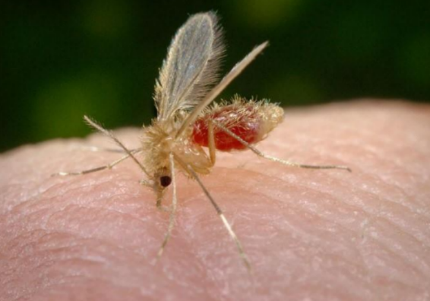
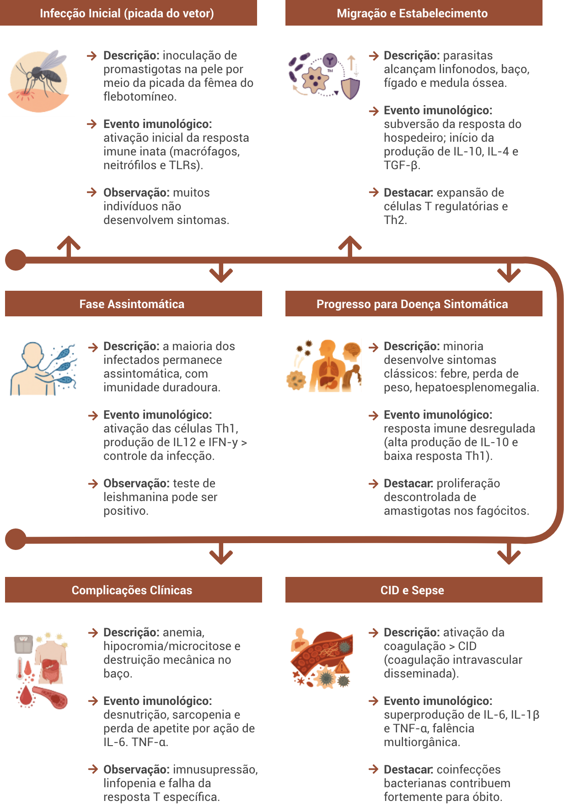

Aula 3
Imunopatogênese das leishmanioses
Antes de compreender a evolução clínica das leishmanioses, é essencial entender como o nosso sistema imunológico responde à infecção. A imunopatogênese diz respeito ao conjunto de reações do organismo frente ao parasita, e essa resposta é o que define, em grande parte, se a doença será controlada ou agravada. Essa aula aborda os dois braços da imunidade — inata e adaptativa — e como eles influenciam a progressão da doença e a eficácia do tratamento. A resposta imune inata é a primeira linha de defesa do organismo contra o parasita. Ela é composta por mecanismos que atuam de forma imediata e inespecífica.
Quando o vetor flebotomíneo pica a pele e inocula o parasito, os primeiros a responder são os neutrófilos, que migram rapidamente para o local da infecção. Esses neutrófilos capturam o parasito e, logo em seguida, sofrem apoptose (morte celular programada). Macrófagos então fagocitam esses neutrófilos apoptóticos contendo os parasitas, o que, ao invés de eliminá-los, facilita a infecção das próprias células de defesa. Isso ocorre porque a Leishmania é capaz de sobreviver dentro do vacúolo ácido dos macrófagos.
Outras células da imunidade inata, como as células dendríticas, também têm um papel importante. Elas ajudam a processar o antígeno e apresentá-lo às células do sistema adaptativo, dando início a uma resposta mais especializada.
Além disso, proteínas inflamatórias e sinais moleculares são liberados no local da infecção, ajudando a recrutar mais células de defesa e ampliando a resposta inflamatória.
OBJETIVOS:
Ao final desta aula, esperamos que você seja capaz de:
- Identificar os principais mecanismos da resposta imune inata e adaptativa envolvidos na leishmaniose tegumentar e visceral;
- Compreender como o desequilíbrio da resposta imune contribui para as diferentes manifestações clínicas da doença.
Leishmaniose Tegumentar
A leishmaniose tegumentar (LT) é um problema de saúde significativo no Brasil, onde as principais espécies de Leishmania associadas a essa doença são Leishmania (Viannia) braziliensis, L. (V.) naiffi, L. (V.) shawi, L. (V.) lainsoni e L. (Leishmania) amazonensis. Dentre essas, L. braziliensis é a espécie predominante nas regiões do Brasil onde a LT é endêmica, ocorrendo em áreas de colonização antiga e recente, com baixa prevalência no estado do Amazonas.
Vetor da Leishmaniose - flebotomíneo conhecido popularmente como mosquito-palha

A transmissão de L. braziliensis está associada à presença de animais domésticos, que são implicados como potenciais reservatórios. A transmissão ocorre por várias espécies de flebotomíneos, incluindo Lutzomyia intermedia, Lu. whitmani e Lu. wellcomei.
A L. amazonensis foi identificada em diferentes áreas do Brasil e induz diferentes formas clínicas, desde aquelas com surgimento de úlceras cutâneas até a forma cutânea difusa (LCD), com presença de nódulos. Os principais reservatórios de L. amazonensis são roedores e marsupiais, e as principais espécies vetoriais associadas à sua transmissão são Lu. flaviscutellata e Lu. olmeca.
As interações entre hospedeiro e parasita podem levar a uma série de eventos que culminam em manifestações clínicas. As formas clínicas da LT variam devido a essa complexidade. No Brasil, a LT pode se apresentar como uma única lesão (LCL – leishmaniose cutânea localizada), que pode ser aparentemente discreta e cicatrizar espontaneamente. Múltiplas ulcerações também podem estar presentes, comprometendo as áreas mucosas (ML – leishmaniose mucosa). A ML é particularmente importante na América do Sul e é causada principalmente por L. braziliensis, embora L. amazonensis também tenha sido implicada. Mais recentemente, tem-se observado um aumento no número de casos de leishmaniose cutânea disseminada (LD), que se caracteriza por lesões espalhadas pelo corpo.
Fatores do parasita associados à patogênese da doença
Embora ainda falte uma compreensão completa dos mediadores e fatores que influenciam o desfecho da infecção, alguns mecanismos já são conhecidos. A persistência do parasita, devido à sua capacidade de evasão da imunidade, é um fator que influencia a duração da doença e o resultado clínico, principalmente nas formas mais graves de leishmaniose. Nesse sentido, o metabolismo da arginina possui um papel fundamental na sobrevivência ou destruição do parasita. Dependendo do tipo de arginase que a célula hospedeira expressa, o metabolismo da arginina pode resultar na produção de óxido nítrico (NO) ou de L-ornitina. O NO é tóxico para o parasita, enquanto a L-ornitina é essencial para o crescimento da Leishmania.
Além disso, demonstrou-se que a própria arginase do parasita influencia a infectividade. A L. mexicana com a atividade de arginase eliminada levou a uma infecção significativamente atenuada em camundongos, com pior sobrevivência dentro das células hospedeiras e infecção mais moderada. Uma possível expressão clínica dessas descobertas pode estar associada à observação de que promastigotas de L. amazonensis e L. braziliensis resistentes ao NO in vitro causam piores desfechos nos pacientes de onde foram isoladas.
Um estudo realizado em uma das regiões com maior endemicidade de leishmaniose tegumentar americana (LTA) no Brasil descreveu uma população complexa de L. braziliensis, composta por vários clones diferentes do parasita que afetam pacientes com leishmaniose. Esse estudo detectou uma associação estatisticamente significativa entre o genótipo do parasita e os desfechos clínicos, que variaram entre leishmaniose cutânea (LC), leishmaniose mucosa (LM) ou leishmaniose difusa (LD).
Um estudo de acompanhamento na mesma região identificou que a distribuição da LM e da LD diferia significativamente em toda a área afetada, e que a distribuição geográfica das formas de LT também parecia ser influenciada pela cepa de L. braziliensis. No entanto, o mecanismo mais convincente que pode levar à LM envolve a infecção de cepas de L. guyanensis pelo vírus de RNA da Leishmania-1. Em camundongos, os parasitas metastatizantes de L. guyanensis apresentaram uma carga maior de LRV-1 do que cepas não metastatizantes. Verificou-se que o aumento da carga de LRV-1 estimulava o receptor tipo Toll 3 do hospedeiro e induzia a produção de citocinas e quimiocinas pró-inflamatórias pelos macrófagos. Se esse mecanismo for o mesmo que ocorre na patologia da doença em humanos, ele pode resultar, em última análise, na forte resposta inflamatória e na destruição do tecido observadas em pacientes com LM.
A seguir, organizamos em uma tabela os principais fatores do parasita associados à gravidade das formas clínicas da leishmaniose. Essa síntese ajuda a visualizar como características específicas do próprio protozoário — como resistência ao óxido nítrico ou presença de vírus — podem influenciar a resposta do organismo infectado e o tipo de manifestação da doença.
| Fator | Descrição | Efeito clínico |
|---|---|---|
| Arginase do parasita | Enzima que converte arginina em L-ornitina, favorecendo o crescimento do parasita. | Associada à persistência da infecção e maior gravidade clínica. |
| Resistência ao óxido nítrico (NO) | Algumas cepas de L. amazonensis e L. braziliensis resistem ao NO, um agente tóxico para o parasita. | Está associada a piores desfechos nos pacientes infectados. |
| Variabilidade genética (genótipos) | Presença de diferentes clones de L. braziliensis em regiões endêmicas. | Genótipos específicos podem levar a LC, LM ou LD, com diferentes gravidades. |
| Vírus LRV-1 (Leishmania RNA virus) | Vírus que infecta o parasita L. guyanensis, aumentando sua agressividade. | Pode intensificar a resposta inflamatória via TLR3 e agravar lesões mucosas. |
Resposta Imune Inata na Leishmaniose Tegumentar
O desenvolvimento de uma resposta imune protetora contra patógenos intracelulares requer a ação coordenada de células da resposta imune inata e adaptativa. Por outro lado, o desequilíbrio entre a inflamação e a regulação dessas respostas está entre as principais causas das lesões observadas na leishmaniose tegumentar (LT).
Após a infecção por Leishmania, diferentes tipos celulares da imunidade inata podem interagir com o parasita. Embora os macrófagos sejam as principais células hospedeiras, modelos animais mostram que neutrófilos e células dendríticas (DCs) também conseguem capturar os parasitas logo após a infecção. Os neutrófilos são importantes por fazerem a ponte entre imunidade inata e adaptativa, interagindo com monócitos, DCs e linfócitos T e B, promovendo respostas inflamatórias envolvidas na defesa do hospedeiro e na reparação tecidual. A cooperação entre neutrófilos e macrófagos pode contribuir tanto para resistência quanto para suscetibilidade à infecção, conforme observado em modelos experimentais.
Essas células têm vida curta e morrem por apoptose. A remoção de neutrófilos apoptóticos por macrófagos está associada à produção de mediadores anti-inflamatórios, como TGF-β e PGE2, que inibem a ativação macrofágica. Já a fagocitose de neutrófilos necróticos leva à produção de mediadores pró-inflamatórios. Estudos com neutrófilos humanos infectados por L. amazonensis mostraram que os apoptóticos aumentam a carga do parasita de forma dependente de TGF-β e PGE2. Por outro lado, a interação entre macrófagos e neutrófilos necróticos reduziu a carga parasitária.
Monócitos inflamatórios e células dendríticas também são recrutados para o local da infecção logo nos primeiros dias, tornando-se as principais células infectadas. Algumas já estão infectadas nas primeiras horas após o contato com o parasita. O recrutamento precoce de monócitos depende da quimiocina CCL2, que é produzida localmente. Diferentemente dos macrófagos, os monócitos apresentam uma resposta respiratória intensa e conseguem controlar melhor o parasita logo após a infecção. Já os macrófagos precisam ser ativados por IFN-γ para eliminar os parasitas.
Dois mecanismos principais são responsáveis pelo controle da Leishmania: a produção de espécies reativas de oxigênio (ROS – reactive oxygen species) e de óxido nítrico (NO), gerado pela enzima iNOS, induzida por IFN-γ. Embora os parasitas sejam sensíveis aos ROS, a produção natural desses radicais por macrófagos pode ser insuficiente, pois a Leishmania pode inibir essa geração. O IFN-γ, no entanto, potencializa esse processo. A produção de ROS é especialmente importante nas fases iniciais da infecção, antes do estabelecimento da resposta adaptativa. O NO também tem papel importante, principalmente em modelos com camundongos. Em humanos, o papel do NO ainda é incerto: embora sua expressão tenha sido detectada em lesões cutâneas, não houve alteração no gene NOS2 em comparação com a pele normal.
Macrófagos ativados classicamente por IFN-γ secretam IL-12, produzem ROS e são importantes na destruição do parasita. Já os ativados por IL-4 (ativação alternativa) ou com perfil regulador, favorecem o crescimento do parasita. Apesar do potencial leishmanicida dos macrófagos ativados classicamente, a Leishmania desenvolveu estratégias para escapar dessas respostas. No entanto, o cenário in vivo pode ser distinto. Pacientes com LC, por exemplo, apresentam forte resposta inflamatória mesmo com baixa carga parasitária. Estudos mostram que macrófagos de pessoas com infecção subclínica controlam melhor o parasita do que os de pacientes com.
As células NK também fazem parte da linha de frente da defesa contra a Leishmania, produzindo IFN-γ para ativar macrófagos. Pacientes com LC geralmente apresentam menor número ou atividade de células NK nas lesões. Em estudos in vitro, essas células foram a principal fonte de IFN-γ em indivíduos não expostos à Leishmania e em pessoas com infecção.
Os receptores de reconhecimento de padrões (PRR), como os TLRs (receptores tipo Toll), também desempenham papel fundamental nos estágios iniciais da infecção. Monócitos de pacientes com LC infectados por L. braziliensis apresentaram menor carga parasitária após neutralização dos TLR2 e TLR4, bem como redução na produção de IL-1β e TNF-α.
Além dos TLRs, os NLRs e os inflamossomas também participam da resposta. Nos últimos anos, a ativação do inflamassoma NLRP3 foi descrita em diferentes infecções por Leishmania. A Leishmania, por sua vez, pode tentar limitar essa ativação. Quando o inflamassoma permanece ativado por muito tempo, ocorre produção excessiva de IL-1β, que pode levar à inflamação descontrolada e ao agravamento das lesões.
Portanto, os eventos da imunidade inata são essenciais para o controle inicial da infecção por Leishmania, mas o desbalanceamento entre ativação e regulação pode contribuir para o agravamento da doença.
Ao entrar no organismo, o parasita Leishmania desencadeia uma série de reações do sistema imunológico. A resposta inicial, chamada de imunidade inata, é a primeira barreira de defesa e envolve células como neutrófilos, macrófagos, monócitos, células NK e dendríticas. Cada uma dessas células tem um papel importante — algumas ajudam a eliminar o parasita, outras, dependendo do tipo de ativação, podem até favorecer sua permanência. Além das células, estruturas como os receptores TLR e os inflamassomas são essenciais para reconhecer a infecção e controlar a inflamação. A seguir, apresentamos os principais conceitos dessa etapa de defesa, organizados em cards para facilitar a leitura e o entendimento.
• Papel das células TCD4+
Nas leishmanioses, as respostas mediadas por células são essenciais para garantir proteção contra reinfecções. Por outro lado, quando não reguladas, essas respostas são também responsáveis pela duração das lesões, caracterizadas por respostas inflamatórias exacerbadas.
Como explicado na aula anterior, existem duas populações de linfócitos T: os TCD4+, chamados de linfócitos Th (helper ou T auxiliares), e os linfócitos TCD8+, chamados de citotóxicos. Muito do que se sabe atualmente sobre a resposta imune à Leishmania spp. vem de estudos realizados com diferentes linhagens de camundongos resistentes ao parasita, como o C57BL/6, e suscetíveis, como os BALB/c.
Foram identificadas, por diferentes abordagens experimentais, distintas subpopulações de células Th, de acordo com o padrão de citocinas que produzem. A subpopulação Th1 produz IFNγ e IL-2; a subpopulação Th2, por sua vez, produz IL-4, IL-5 e IL-13. Posteriormente, foi definida outra subpopulação, denominada Th17, que produz IL-17, responsável pelo recrutamento de neutrófilos. Outra importante subpopulação refere-se aos linfócitos T regulatórios (Treg), que produzem IL-10 e TGF-β — citocinas anti-inflamatórias que inibem os efeitos da ação de Th1, Th2 e Th17.
Nas linhagens de camundongos resistentes, observou-se que a indução de Th1 com produção de IFN-γ é essencial para a resistência à infecção por L. major, pois essa citocina ativa os macrófagos, levando a maior produção de NO e ROS e, portanto, contribuindo para a eliminação dos parasitas. Já nos camundongos BALB/c, observa-se uma ativação preferencial de linfócitos Th2, com a produção de IL-4 e IL-13. Isso contribui para uma ativação alternativa dos macrófagos, estimulando a enzima arginase e a produção de ornitinas e putrescinas, que favorecem a proliferação da Leishmania sp.
Em seres humanos, essa dicotomia entre Th1 e Th2 não é tão clara, especialmente nos pacientes infectados por L. braziliensis. Como citado anteriormente, as lesões típicas da leishmaniose cutânea causada por L. braziliensis são caracterizadas por uma resposta inflamatória exacerbada, com a presença de poucos parasitas.
É interessante observar que, em pacientes subclínicos (com sintomas muito leves ou ausentes), a produção de citocinas pró-inflamatórias, como IFN-γ e TNF-α, é significativamente menor do que a de pacientes com leishmaniose cutânea. Isso sugere que a regulação dessas citocinas é importante para mitigar a resposta inflamatória.
O papel das células Th17 ainda não está completamente esclarecido na leishmaniose cutânea. As citocinas dessa subpopulação parecem ser mais importantes nas fases iniciais da infecção, promovendo o recrutamento de neutrófilos. Esses neutrófilos, por sua vez, podem ser infectados por Leishmania e, ao sofrerem apoptose (morte celular programada), criam um ambiente antiinflamatório ideal para a proliferação do parasita. Os níveis de IL-17 também se correlacionam com a resposta inflamatória na pele de pacientes com leishmaniose cutânea e mucosa. A maior parte dos estudos sobre a patogênese induzida por IL-17 em humanos foi realizada com infecção por L. braziliensis.
Papel das células TCD8+ e NK cells
A citotoxicidade foi associada pela primeira vez à gravidade da doença em pacientes com infecção por L. amazonensis no final da década de 1990. Desde então, diversos estudos têm mostrado que as células TCD8+ e as células NK desempenham papel importante na resposta imune contra a Leishmania, especialmente nas formas mais graves da doença, como a leishmaniose mucosa. Essas células estão envolvidas diretamente na destruição das células infectadas, mas também podem agravar os quadros clínicos ao estimular uma resposta inflamatória exagerada.
No recurso interativo abaixo, apresentamos os principais mecanismos de atuação das células TCD8+, NK e T reguladoras, bem como o papel da IL-1β e do inflamassoma na progressão das lesões. A proposta é facilitar a compreensão desse processo complexo, organizando as informações em blocos acessíveis e complementares:
As células TCD8+ são citotóxicas, ou seja, têm a capacidade de destruir células infectadas. Em pacientes com leishmaniose mucosa, essas células aparecem em maior número nas lesões ulceradas, e liberam substâncias como granzima, que ajudam a matar células infectadas. Estudos com pacientes infectados por L. braziliensis mostram que a citotoxicidade (ação de destruir células) é intensa e está associada à gravidade das lesões, além de estar ligada à perda da integridade da pele.
O processo de destruição celular ativa o inflamassoma, uma estrutura que desencadeia a produção da IL-1β, uma substância inflamatória. Em pequenas quantidades, ela ajuda na defesa. Mas, quando produzida em excesso, como nas fases crônicas da infecção, causa ainda mais inflamação e agrava a doença. A ativação do inflamassoma depende da enzima caspase-1 e está ligada a um desequilíbrio dos íons potássio e sódio nas células afetadas.
As células NK (natural killers) também têm ação citotóxica parecida com a das TCD8+. Elas produzem IFN-γ e participam ativamente da destruição de células infectadas, além de contribuírem com a produção de IL-1β. Isso torna sua ação relevante tanto para o controle quanto para o agravamento da lesão na leishmaniose cutânea.
As Treg (células T reguladoras) produzem IL-10, uma citocina anti-inflamatória que ajuda a equilibrar a resposta do sistema imune. Quando ativadas muito cedo, essas células podem permitir que o parasita se espalhe. Por outro lado, quando há falha na sinalização da IL-10 (como ocorre em muitos casos de leishmaniose mucosa), a inflamação pode sair do controle. Assim, a IL-10 é um elementochave para manter o equilíbrio entre atacar o parasita e proteger os tecidos do corpo.
Leishmaniose Visceral
A leishmaniose visceral (LV), também conhecida como calazar, é uma doença causada pelos parasitas Leishmania infantum e Leishmania donovani. Os principais sintomas incluem febre, perda de peso, palidez e aumento do fígado e do baço. Em pessoas imunossuprimidas, a doença tende a ser ainda mais grave, e sua taxa de mortalidade pode chegar a 10%.
Apesar de muitas pessoas entrarem em contato com o parasita, apenas uma minoria desenvolve a doença. Isso ocorre porque a maioria apresenta uma infecção assintomática e, com isso, adquire uma imunidade de longa duração. No entanto, quando o parasita consegue escapar das defesas do corpo, ele se multiplica em órgãos como o baço, fígado e medula óssea, provocando os sinais clínicos da doença.
A inflamação sistêmica desencadeada por citocinas pode gerar efeitos em todo o organismo, como febre, vômitos, caquexia (perda extrema de peso) e alterações do sangue. Em casos graves, pode ocorrer coagulação intravascular disseminada (CID), condição semelhante à sepse, que compromete a coagulação do sangue. Junto a isso, há uma redução dos linfócitos e aumento do risco de infecções bacterianas, o que pode levar ao óbito.
Evolução clínica da LV

• Respostas do organismo à infecção
Nem todos os infectados desenvolvem sintomas. Estudos mostram que, em regiões endêmicas, para cada pessoa com sintomas de leishmaniose visceral, há cerca de 200 pessoas que foram infectadas, mas permaneceram assintomáticas.
O trajeto do parasita começa na pele, migra pelos linfonodos e alcança órgãos como baço, fígado e medula óssea. Durante esse caminho, o corpo reage com respostas imunes inatas e adaptativas. Essas respostas podem ser protetoras ou permissivas, dependendo do equilíbrio entre os fatores do hospedeiro e do parasita.
O parasita utiliza mecanismos para sobreviver, como:
- Estimular a produção de IL-10, citocina que reduz a resposta inflamatória.
- Inibir a resposta do tipo Th1, que produz IFN-γ, essencial para combater o parasita.
-
Estimular a proliferação de células Th2 e Treg, que produzem IL-10, IL-4 e TGF-β.
Esses mecanismos enfraquecem a defesa do corpo, favorecendo a progressão da doença.
• Fatores do hospedeiro
Diversos fatores do hospedeiro influenciam a progressão da leishmaniose visceral, além dos mecanismos próprios do parasita. A idade é um dos elementos relevantes: há maior proporção de casos entre indivíduos mais jovens, e pacientes em faixas etárias extremas tendem a apresentar maiores cargas parasitárias, possivelmente por possuírem uma imunidade mais frágil. O sexo também se mostra um fator importante, com maior incidência da doença e maior carga parasitária em homens em idade reprodutiva, o que sugere uma influência dos hormônios sexuais masculinos no agravamento da infecção. A desnutrição, embora seu papel na LV ainda não esteja completamente elucidado, é reconhecida como um fator de risco clássico para doenças tropicais negligenciadas. Já a imunidade adquirida por infecções anteriores por Leishmania parece ser robusta, pois casos de reativação ou reinfecção são raros em indivíduos imunocompetentes. Por outro lado, a imunossupressão adquirida desempenha um papel decisivo, favorecendo a transição de um quadro assintomático para a manifestação clínica da doença.
Fatores agravantes da LV

Crianças pequenas e idosos têm maior carga parasitária e risco de doença grave.

Homens em idade reprodutiva apresentam mais casos, possivelmente por influência hormonal.

Infecções passadas podem gerar imunidade duradoura.

Facilita a progressão da infecção de forma assintomática para sintomática.
• Sinais clínicos e patogenia
A infecção por Leishmania leva à multiplicação descontrolada de parasitas nos fagócitos. Isso gera uma resposta inflamatória intensa com aumento de citocinas como IL-6, IL-1β, TNF-α, IL-10 e TGF-β. Essa resposta, além de combater o parasita, também causa os principais sintomas da doença. Você poderá explorar esses sintomas com mais detalhes no recurso abaixo.
A febre é um dos sintomas mais notáveis da leishmaniose visceral (LV). Ela é mediada pelas citocinas pró-inflamatórias, chamadas pirógenos endógenos, principalmente IL-1β, TNF-α e IL-6. Os pirógenos endógenos são sintetizados e liberados após a interação dos receptores de reconhecimento de padrão (PRRs), provavelmente o receptor Toll-like 2 (TLR2), com Leishmania nos macrófagos.
A perda de peso também é uma manifestação comum da leishmaniose visceral, resultante de desnutrição grave. Pacientes com desnutrição induzida pela leishmaniose visceral têm um risco maior de morte. Embora os mecanismos sejam desconhecidos, existem pelo menos três possibilidades principais para explicar a perda de peso, todas relacionadas à inflamação sistêmica persistente devido à produção de citocinas pró-inflamatórias: (a) perda de apetite como parte da doença, após a inflamação sistêmica; (b) febre, que aumenta acentuadamente o consumo de energia; e (c) resposta de fase aguda, que aumenta o catabolismo muscular, levando à sarcopenia.
A anemia também é uma manifestação clínica comum e um fator de risco para desfechos desfavoráveis na leishmaniose visceral (LV). Ela é tipicamente causada por deficiência de ferro, com hipocromia e microcitose, caracterizada por uma baixa concentração de ferro sérico. No entanto, a destruição mecânica das células vermelhas do sangue, neutrófilos e plaquetas na baço aumentado, como no caso da hiperesplenismo, contribui significativamente para a anemia, independentemente da inflamação. Além disso, embora a maioria dos pacientes com LV sofra de anemia por deficiência de ferro, ela raramente é causada por sangramento, o que indica a participação de um mecanismo diferente na leishmaniose visceral.
• Complicações clínicas e evolução para casos graves
Em casos graves de leishmaniose visceral, complicações importantes podem surgir, como hemorragias, que estão entre as principais causas de morte dos pacientes. O sangramento está frequentemente associado à coagulação intravascular disseminada (CID) e a outras alterações do sistema de coagulação. A CID é caracterizada por uma ativação sistêmica da coagulação do sangue, resultando na formação e deposição de fibrina e, consequentemente, em trombos microvasculares que comprometem o funcionamento de múltiplos órgãos. Essa condição também pode desencadear episódios de hemorragia, dependendo do equilíbrio da cascata de coagulação.
Além disso, a coinfecção bacteriana é uma das principais causas de morte em pacientes com leishmaniose visceral, sendo considerada uma das manifestações mais perigosas da doença. Isso ocorre porque o sistema imunológico já comprometido favorece a instalação de infecções secundárias, especialmente em ambientes hospitalares.

Atenção
A evolução da leishmaniose visceral até o desfecho fatal, muitas vezes por um processo semelhante à sepse, pode ser descrita da seguinte maneira: após a infecção pelo parasita Leishmania, a progressão da doença é influenciada tanto pela virulência do parasita quanto pelos fatores do hospedeiro. Com o agravamento do quadro clínico, pode ocorrer uma resposta imune inata exagerada, que estimula células endoteliais e monócitos a aumentarem a expressão de fatores teciduais, desencadeando a coagulação intravascular disseminada.
Nos estágios finais, essa condição pode ser intensificada por reações de fase aguda, que aumentam os níveis de proteínas pró-coagulantes e reduzem as proteínas anticoagulantes. Alterações na função hepática, retenção de bile e diminuição dos fatores de coagulação dependentes da vitamina K, além da trombocitopenia secundária ao hiperesplenismo, agravam ainda mais o quadro hemorrágico.
Paralelamente, a permanência prolongada em ambiente hospitalar, combinada com a linfopenia e caquexia induzidas pelas citocinas pró-inflamatórias IL-6, IL-1 e TNF-α, bem como a deficiência de nutrientes essenciais como aminoácidos, retinol e zinco, aumentam a vulnerabilidade do paciente a infecções bacterianas. Essas infecções secundárias podem evoluir para sepse bacteriana superimposta, contribuindo para a instalação da síndrome de disfunção múltipla de órgãos e, em muitos casos, para o óbito.
Leishmaniose Visceral Canina (LVC)
Os cães são considerados os principais reservatórios urbanos da Leishmania infantum. Quando estão presentes em áreas onde a leishmaniose visceral (LV) é endêmica, eles contribuem significativamente para a transmissão da doença aos humanos, pois servem como fonte de infecção para os flebotomíneos — os mosquitos transmissores da Leishmania.
A infecção nos cães apresenta um espectro muito amplo: alguns desenvolvem sinais clínicos evidentes, como emagrecimento, problemas de pele, aumento de linfonodos, entre outros, enquanto muitos outros conseguem controlar os parasitas e permanecem assintomáticos por anos — ou por toda a vida. Mesmo sem sintomas, esses cães ainda podem transmitir o parasita aos flebotomíneos, contribuindo para a manutenção da cadeia de transmissão da doença.
A resposta do sistema imunológico canino à infecção por L. infantum influencia diretamente a evolução da doença. Quando os cães desenvolvem uma resposta imunológica do tipo Th1 — com produção de citocinas como IFN-γ, IL-2 e TNF-α — há maior controle da infecção. Já uma resposta do tipo Th2 — com produção de IL-4, IL-5, IL-10, IL-13 e TGF-β — está associada à progressão da doença.
Além disso, o nível de ativação do sistema imunológico e a regulação de substâncias como ferro e proteínas plasmáticas também afetam a evolução da infecção. Por exemplo, o aumento de IFNγ e TNF-α tem sido associado à redução da carga parasitária, enquanto altos níveis de IL-10, da proteína IRP2 (reguladora de ferro) e de albumina plasmática estão associados a uma maior carga de L. infantum nos tecidos. Isso indica que a interação entre resposta imune e metabolismo do ferro pode ser um fator importante para entender a gravidade da LVC.
Apesar de existirem diferenças entre cães e humanos, o cão é um modelo relevante para estudar a leishmaniose visceral humana.

Conclusão
Você chegou ao final do Módulo 3! Neste módulo, discutimos os principais aspectos do diagnóstico das leishmanioses, abordando desde as manifestações clínicas e o diagnóstico diferencial das formas cutânea, mucosa e visceral — incluindo a leishmaniose visceral canina — até as técnicas laboratoriais parasitológicas, imunológicas e moleculares utilizadas na confirmação da doença. Refletimos também sobre como essas escolhas são influenciadas pelo contexto clínico, pelos recursos disponíveis e pela importância da vigilância em saúde.
No próximo módulo, daremos continuidade ao aprofundamento do tema, com foco no tratamento das leishmanioses visceral e tegumentar, incluindo os esquemas terapêuticos atualmente recomendados, suas eficácias e limitações, além de abordarmos as perspectivas da imunoterapia associada à quimioterapia em diferentes formas clínicas da doença.
Esperamos te ver lá!
• Exercício de fixação
As células T CD4+ Th1 são importantes na contenção da disseminação do parasita, porque: